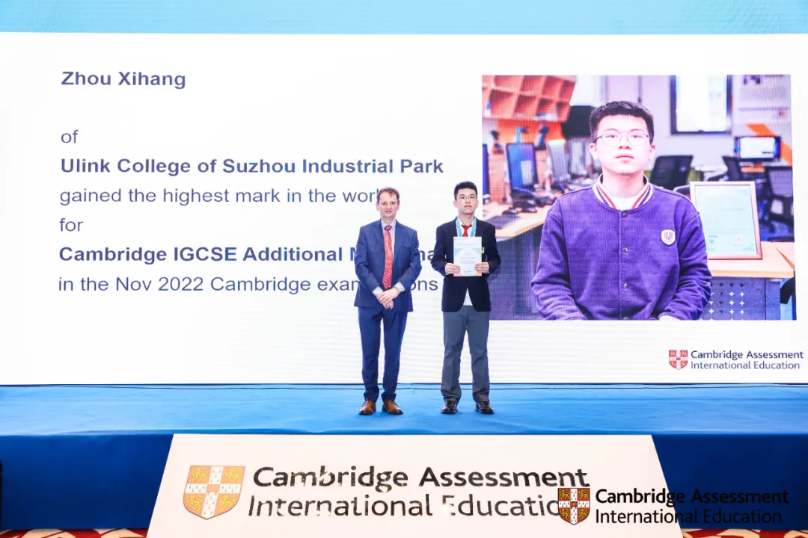

Academic achievement · Xihang Zhou (周曦航)
Top in the World
Outstanding Cambridge Learner Award
Recognised for achieving the highest mark in the world in Cambridge IGCSE Additional Mathematics in the November 2022 Cambridge examinations.
- Recipient
- Xihang Zhou (Zhou Xihang)
- Examination series
- November 2022
- Subject
- IGCSE Additional Mathematics (0606)
- School
- Ulink College of Suzhou Industrial Park
- Awarding organisation
- Cambridge Assessment International Education
- Award category
- Top in the World
Award ceremony photograph

Supporting sources
School WeChat article
Original link supplied by the recipient. WeChat may restrict access in some browsers; the article has not been independently verified for this page.
School presentation hosted on Cambridge International's website (printed page 17)
Supplementary record listing “Zhou X” for Additional Mathematics. This is a school presentation, not an independently issued Cambridge award registry.